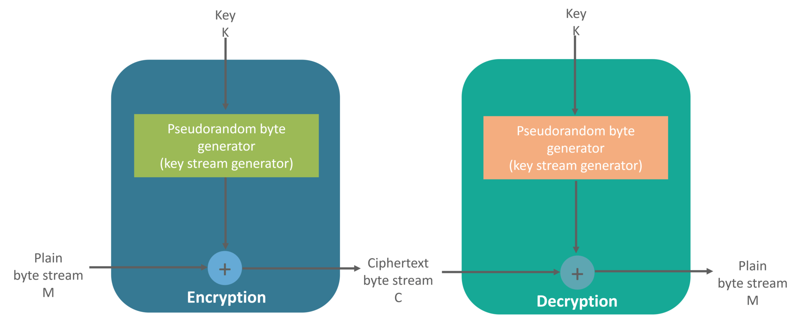

How various Cryptographic Algorithms Works
links:
Let’s start with the Symmetric key encryption
Symmetric Key Cryptography
An encryption system in which the sender and receiver of a message share a single, common key that is used to encrypt and decrypt the message. The most popular symmetric–key system is the Data Encryption Standard (DES)
Transposition Ciphers
In Cryptography, a transposition cipher is a method of encryption by which the positions held by units of plaintext (which are commonly characters or groups of characters) are shifted according to a regular system, so that the ciphertext constitutes a permutation of the plaintext.
That is, the order of the units is changed (the plaintext is reordered). Mathematically, a bijective function is used on the characters’ positions to encrypt and an inverse function to decrypt.
Substitution Cipher
Method of encryption by which units of plaintext are replaced with ciphertext, according to a fixed system; the “units” may be single letters (the most common), pairs of letters, triplets of letters, mixtures of the above, and so forth.
Stream Cipher
Symmetric or secret-key encryption algorithm that encrypts a single bit at a time. With a Stream Cipher, the same plaintext bit or byte will encrypt to a different bit or byte every time it is encrypted.

Block Cipher
An encryption method that applies a deterministic algorithm along with a symmetric key to encrypt a block of text, rather than encrypting one bit at a time as in stream ciphers

Asymmetric Key Encryption (or Public Key Cryptography)
The encryption process where different keys are used for encrypting and decrypting the information. Keys are different but are mathematically related, such that retrieving the plain text by decrypting ciphertext is feasible.
RSA is the most widely used form of public key encryption,
RSA Algorithm
- RSA stands for Rivest, Shamir, and Adelman, inventors of this technique
- Both public and private key are interchangeable
- Variable Key Size (512, 1024, or 2048 bits)
 Alright, this was it for “What is Cryptography” blog. To safeguard your information and data shared over the internet it is important to use strong encryption algorithms, to avoid any catastrophic situations.
Alright, this was it for “What is Cryptography” blog. To safeguard your information and data shared over the internet it is important to use strong encryption algorithms, to avoid any catastrophic situations.